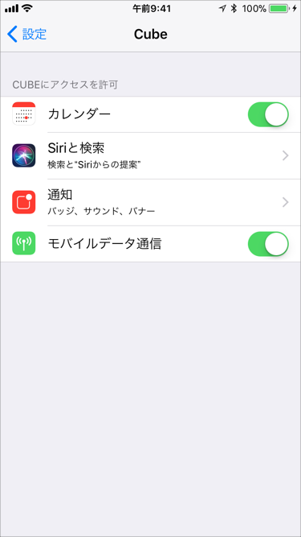
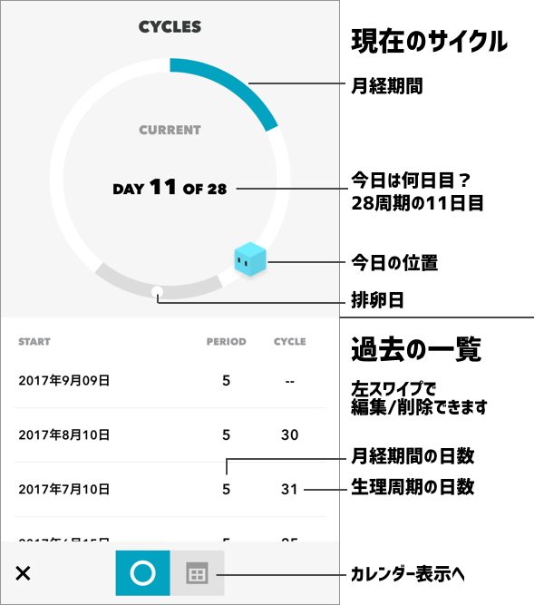
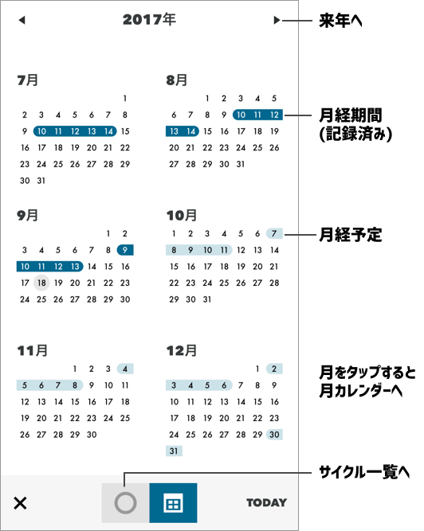

次のサイクル（次の生理開始日）までの日数を表示しします。
予定日を過ぎている場合は、○ DAYS LATE（○日遅れています）の表示になります。
日数をお知らせしてくれるCube達は、一定時間を過ぎると動きはじめます。
もとの表示に戻すためには、画面をタップしてください。


記録済みの月経期間が濃い色、予測した月経期間が薄い色になっています。
月をタップすると、その月のカレンダーのイベント情報と一緒に確認ができます。
旅行の予定に重なっていないか？などの確認に便利です！